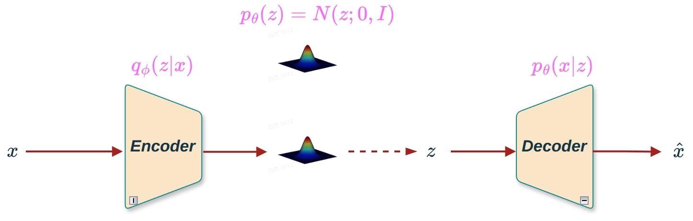
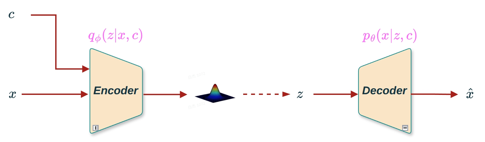
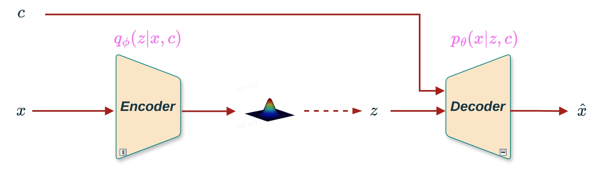
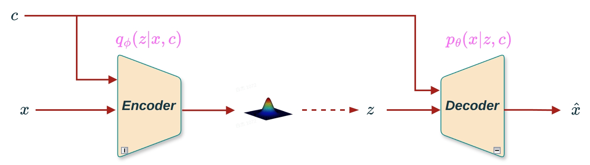
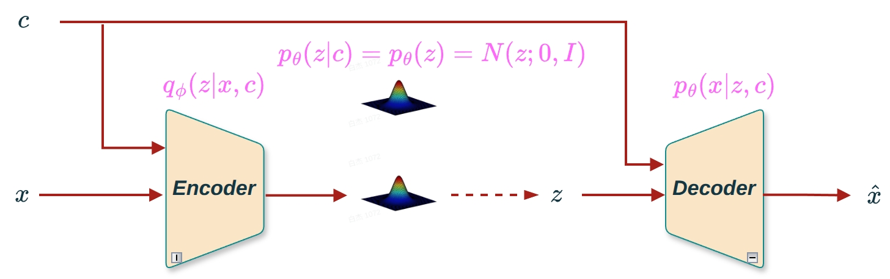
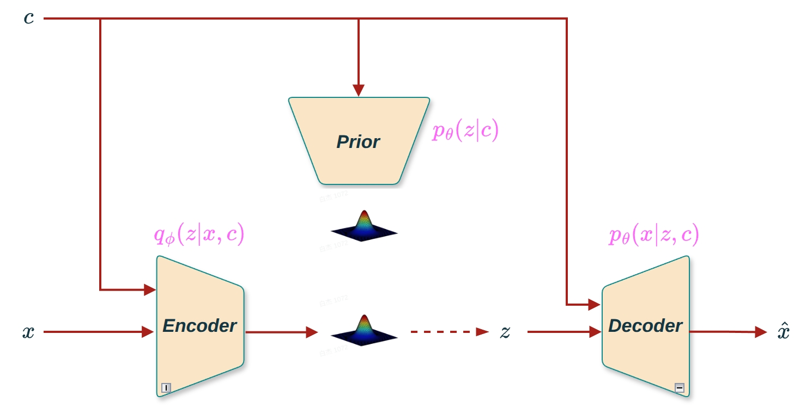
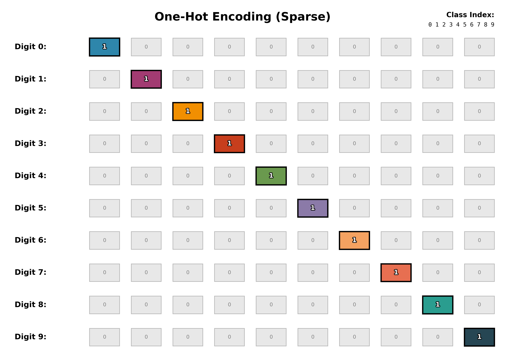
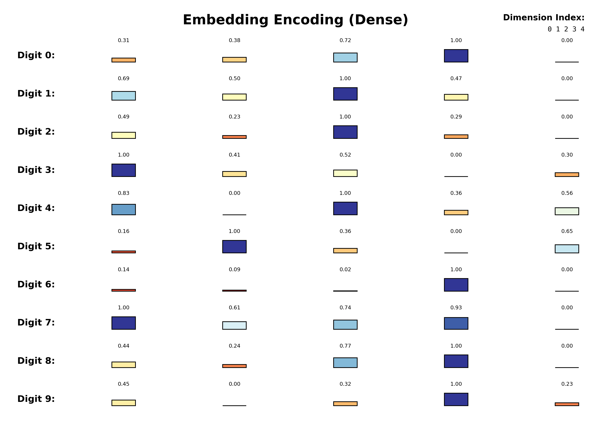
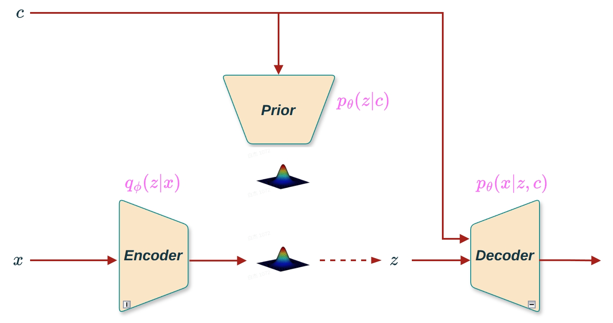

变分自编码器（VAE）是一种强大的生成模型，它通过学习数据的潜在表示（latent representation）来生成新样本。VAE通过正则化潜在空间，使得整个潜在空间都具有生成能力，可以从标准正态分布 \(\mathcal{N}(0, I)\) 中采样潜在变量 \(z\)，然后通过解码器生成新的数据样本。
然而，传统的VAE在处理一些需要特定条件控制的生成任务时显得力不从心。具体来说:
无法控制生成内容:VAE从标准正态分布随机采样潜在变量 \(z\)，生成的内容是完全随机的，无法指定生成特定类别的样本
在图像生成任务中，我们可能希望根据特定标签（如数字“5”）来生成相应的图像，而不是随机生成一个图像
为了增强VAE的灵活性和可控性，提出了条件变分自编码器（Conditional Variational Autoencoder, CVAE）。CVAE允许我们在生成过程中加入额外的信息（条件），从而实现更加精确和可控的数据生成。
核心思想:在VAE的基础上，引入条件变量 \(c\)，使得生成过程依赖于条件信息。比如，可以通过指定条件变量 \(c\) 来指导模型生成特定类别的样本。
为了更好地理解VAE和CVAE的区别，我们先回顾一下VAE的架构:

图1 VAE架构:编码器输出分布参数 \((\mu, \sigma)\)，通过重参数化采样 \(z\)，解码器重构输出 \(\hat{x}\)
于是自然而然出现了三个待解答的问题。
在CVAE中，条件变量 \(c\) 可以添加到VAE的不同位置，每种选择都会产生不同的模型变体:
选项1:条件只加在编码器（Encoder）

图2 选项1:条件只加在编码器
选项2:条件只加在解码器（Decoder）

图3 选项2:条件只加在解码器
选项3:条件同时加在编码器和解码器

图4 选项3:条件同时加在编码器和解码器
这是一个重要的理论问题，涉及先验分布 \(p(z|c)\) 的选择:
情况1:c和z独立（Independent） - 假设:\(p(z|c) = p(z) = \mathcal{N}(0, I)\) - 含义:条件 \(c\) 不影响潜在变量 \(z\) 的先验分布 - 实现:不需要额外的Prior网络，先验分布是固定的标准正态分布 - KL项:\(\text{KL}(q_\phi(z|x,c) \| p(z))\) 或 \(\text{KL}(q_\phi(z|x) \| p(z))\)

图5 情况1:c和z独立
情况2:c和z非独立（Dependent） - 假设:\(p(z|c) = \mathcal{N}(\mu_{prior}(c), \sigma_{prior}^2(c))\) - 先验分布依赖于条件 - 含义:不同条件对应不同的潜在空间先验分布 - 实现:需要Prior网络来学习条件先验 \(p(z|c)\) - KL项:\(\text{KL}(q_\phi(z|x,c) \| p(z|c))\) 或 \(\text{KL}(q_\phi(z|x) \| p(z|c))\)

图6 情况2:c和z非独立
条件变量 \(c\) 需要编码成数值向量才能输入神经网络，常见的编码方式有:
方式1:One-Hot编码 - 方法:将类别索引转换为独热向量 - 例如:类别3 → \([0, 0, 0, 1, 0, 0, 0, 0, 0, 0]\)（MNIST的10个类别） - 优点:简单直观，不需要额外参数 - 缺点:维度等于类别数，当类别数很大时维度很高；编码是固定的，无法学习
方式2:Embedding编码 - 方法:使用可学习的嵌入层将类别索引映射为低维向量 - 例如:类别3 → 可学习的N维向量 - 优点:维度可自定义，通常比one-hot更紧凑；可以学习到类别之间的语义关系 - 缺点:需要额外的可学习参数


图7 条件编码方式:One-Hot编码（左）vs Embedding编码（右）
在CVAE中，我们需要最大化条件对数似然 \(\log p_\theta(x|c)\)。与VAE类似，我们引入变分后验 \(q_\phi(z|x,c)\) 来近似真实后验 \(p_\theta(z|x,c)\)。
条件对数似然: \[\log p_\theta(x|c) = \log \int p_\theta(x|z,c) p_\theta(z|c) dz \tag{1}\]
引入变分后验:我们使用 \(q_\phi(z|x,c)\) 来近似 \(p_\theta(z|x,c)\)。
ELBO推导:
展开KL散度:
\[\begin{aligned} D_\text{KL}(q_\phi(\mathbf{z}|\mathbf{x},c) \| p_\theta(\mathbf{z}|\mathbf{x},c)) &= \int q_\phi(\mathbf{z}|\mathbf{x},c) \log\frac{q_\phi(\mathbf{z}|\mathbf{x},c)}{p_\theta(\mathbf{z}|\mathbf{x},c)} d\mathbf{z} \\ &= \int q_\phi(\mathbf{z}|\mathbf{x},c) \log\frac{q_\phi(\mathbf{z}|\mathbf{x},c)p_\theta(\mathbf{x}|c)}{p_\theta(\mathbf{z}, \mathbf{x}|c)} d\mathbf{z} \\ &= \int q_\phi(\mathbf{z}|\mathbf{x},c) \big( \log p_\theta(\mathbf{x}|c) + \log\frac{q_\phi(\mathbf{z}|\mathbf{x},c)}{p_\theta(\mathbf{z}, \mathbf{x}|c)} \big) d\mathbf{z} \\ &= \log p_\theta(\mathbf{x}|c) + \int q_\phi(\mathbf{z}|\mathbf{x},c)\log\frac{q_\phi(\mathbf{z}|\mathbf{x},c)}{p_\theta(\mathbf{z}, \mathbf{x}|c)} d\mathbf{z} \\ &= \log p_\theta(\mathbf{x}|c) + \int q_\phi(\mathbf{z}|\mathbf{x},c)\log\frac{q_\phi(\mathbf{z}|\mathbf{x},c)}{p_\theta(\mathbf{x}|\mathbf{z},c)p_\theta(\mathbf{z}|c)} d\mathbf{z} \\ &= \log p_\theta(\mathbf{x}|c) + \mathbb{E}_{\mathbf{z}\sim q_\phi(\mathbf{z}|\mathbf{x},c)}[\log q_\phi(\mathbf{z}|\mathbf{x},c) - \log p_\theta(\mathbf{x}|\mathbf{z},c) - \log p_\theta(\mathbf{z}|c)] \\ &= \log p_\theta(\mathbf{x}|c) + D_\text{KL}(q_\phi(\mathbf{z}|\mathbf{x},c) \| p_\theta(\mathbf{z}|c)) - \mathbb{E}_{\mathbf{z}\sim q_\phi(\mathbf{z}|\mathbf{x},c)}\log p_\theta(\mathbf{x}|\mathbf{z},c) \end{aligned}\]
重新排列后，我们有:
\[\log p_\theta(\mathbf{x}|c) = D_\text{KL}(q_\phi(\mathbf{z}|\mathbf{x},c) \| p_\theta(\mathbf{z}|\mathbf{x},c)) + \mathcal{L}(\mathbf{x},c; \theta, \phi) \tag{2}\]
其中:
\[\mathcal{L}(\mathbf{x},c; \theta, \phi) = \mathbb{E}_{\mathbf{z}\sim q_\phi(\mathbf{z}|\mathbf{x},c)}\log p_\theta(\mathbf{x}|\mathbf{z},c) - D_\text{KL}(q_\phi(\mathbf{z}|\mathbf{x},c) \| p_\theta(\mathbf{z}|c)) \tag{3}\]
\(\mathcal{L}(\mathbf{x},c; \theta, \phi)\) 被称为证据下界（Evidence Lower Bound, ELBO）。由于KL散度总是非负的，我们有:
\[\log p_\theta(\mathbf{x}|c) \geq \mathcal{L}(\mathbf{x},c; \theta, \phi) \tag{4}\]
因此，最大化ELBO等价于最小化KL散度。
ELBO的组成:
CVAE的损失函数:
在变分贝叶斯方法中，损失函数是ELBO的负值:
\[\mathcal{L}_{CVAE} = -\mathcal{L}(\mathbf{x},c; \theta, \phi) = -\mathbb{E}_{\mathbf{z}\sim q_\phi(\mathbf{z}|\mathbf{x},c)}\log p_\theta(\mathbf{x}|\mathbf{z},c) + D_\text{KL}(q_\phi(\mathbf{z}|\mathbf{x},c) \| p_\theta(\mathbf{z}|c)) \tag{5}\]
通过最小化损失，我们实际上是在最大化生成真实数据样本（在给定条件 \(c\) 下）概率的下界。
与VAE相比，CVAE的ELBO有两处关键变化: 1. 重构项:\(\mathbb{E}_{\mathbf{z}\sim q_\phi(\mathbf{z}|\mathbf{x},c)}\log p_\theta(\mathbf{x}|\mathbf{z},c)\) - 解码器依赖于条件 \(c\) 2. KL项:\(D_\text{KL}(q_\phi(\mathbf{z}|\mathbf{x},c) \| p_\theta(\mathbf{z}|c))\) - 先验分布依赖于条件 \(c\)
可以看出，这就是最标准的CVAE的形式。接下来，我们来回答2中提出来的几个问题，关于c与z的独立性问题，以及c可以加在哪个位置？
假设:条件 \(c\) 和潜在变量 \(z\) 是独立的，先验分布不依赖于条件。
ELBO: \[\mathcal{L}(x,c; \theta, \phi) = \mathbb{E}_{z \sim q_\phi(z|x,c)}[\log p_\theta(x|z,c)] - \text{KL}(q_\phi(z|x,c) \| p(z)) \tag{6}\]
特点: - 不需要Prior网络，先验分布是固定的标准正态分布 - KL项简化为:\(\text{KL}(q_\phi(z|x,c) \| \mathcal{N}(0, I))\) - 计算简单，参数量较少
KL散度计算: \[\text{KL}(q_\phi(z|x,c) \| p(z)) = \text{KL}(\mathcal{N}(\mu, \sigma^2 I) \| \mathcal{N}(0, I)) = \frac{1}{2}\sum_{i=1}^{H}[\mu_i^2 + \sigma_i^2 - 1 - \log \sigma_i^2] \tag{7}\]
假设:条件 \(c\) 和潜在变量 \(z\) 是非独立的，先验分布依赖于条件。
ELBO: \[\mathcal{L}(x,c; \theta, \phi) = \mathbb{E}_{z \sim q_\phi(z|x,c)}[\log p_\theta(x|z,c)] - \text{KL}(q_\phi(z|x,c) \| p_\theta(z|c)) \tag{8}\]
特点: - 需要Prior网络来学习条件先验 \(p_\theta(z|c)\) - Prior网络输出:\(\mu_{prior}(c), \sigma_{prior}(c)\) - 更灵活，可以建模不同条件对应的不同潜在空间结构
KL散度计算: 两个高斯分布之间的KL散度:
\[\begin{aligned} \text{KL}(q_\phi(z|x,c) \| p_\theta(z|c)) &= \text{KL}(\mathcal{N}(\mu_q, \sigma_q^2) \| \mathcal{N}(\mu_{prior}, \sigma_{prior}^2)) \\ &= \frac{1}{2}\log \frac{\sigma_{prior}^2}{\sigma_q^2} + \frac{\sigma_q^2 + (\mu_q - \mu_{prior})^2}{2\sigma_{prior}^2} - \frac{1}{2} \end{aligned} \tag{9}\]
架构对比:
图8 CVAE的两种先验对比:独立情况（左，固定先验）vs 非独立情况（右，Prior网络学习先验 \(p(z|c)\)）
模型定义: - 编码器:\(q_\phi(z|x)\) - 不使用条件 \(c\) - 解码器:\(p_\theta(x|z,c)\) - 使用条件 \(c\) - 先验:\(p_\theta(z|c)\) 或 \(p(z)\)
ELBO: 如果使用条件先验 \(p_\theta(z|c)\): \[\mathcal{L}(x,c; \theta, \phi) = \mathbb{E}_{z \sim q_\phi(z|x)}[\log p_\theta(x|z,c)] - \text{KL}(q_\phi(z|x) \| p_\theta(z|c)) \tag{10}\]
如果使用固定先验 \(p(z) = \mathcal{N}(0, I)\): \[\mathcal{L}(x,c; \theta, \phi) = \mathbb{E}_{z \sim q_\phi(z|x)}[\log p_\theta(x|z,c)] - \text{KL}(q_\phi(z|x) \| p(z)) \tag{11}\]
特点: - 潜在表示 \(z\) 与条件 \(c\) 在编码阶段独立 - 条件信息只影响生成过程，不影响潜在表示的学习 - 适用于希望潜在表示与条件解耦的场景

图9 条件只加在解码器的CVAE变体(c和z非独立的情况)
理论问题:如果条件 \(c\) 只加在编码器，即 \(q_\phi(z|x,c)\)，而解码器不使用条件，即 \(p_\theta(x|z)\)，会出现什么问题？
问题分析:
生成过程不可控: - 在生成新样本时，我们需要从先验 \(p(z|c)\) 或 \(p(z)\) 采样 \(z\)，然后通过解码器 \(p_\theta(x|z)\) 生成 \(x\) - 由于解码器不依赖于条件 \(c\)，无法根据条件控制生成内容 - 即使条件影响编码过程，生成时也无法利用条件信息
结论:条件至少要在解码器中使用，才能实现条件生成。因此，CVAE的标准形式是条件同时加在编码器和解码器，或者只加在解码器。
在CVAE中，条件变量 \(c\) 起到以下关键作用:
核心思想:CVAE中条件 \(c\) 的本质作用是改变潜在变量 \(z\) 的分布。
在VAE中，潜在变量 \(z\) 的先验分布是固定的: \[p(z) = \mathcal{N}(0, I) \tag{12}\]
无论生成什么内容，\(z\) 都从相同的标准正态分布采样。
在CVAE中，条件 \(c\) 改变了 \(z\) 的分布:
非独立情况为例 - 先验 \(p_\theta(z|c)\) 直接依赖于条件 \(c\) - 不同条件 \(c\) 对应不同的先验分布:\(\mathcal{N}(\mu_{prior}(c), \sigma_{prior}^2(c))\) - 后验 \(q_\phi(z|x,c)\) 也依赖于条件 \(c\) - 条件 \(c\) 直接改变了潜在变量 \(z\) 的分布
VAE: \[z \sim p(z) = \mathcal{N}(0, I) \tag{13}\] 潜在变量 \(z\) 服从固定的标准正态分布。
CVAE（非独立情况）: \[z \sim p_\theta(z|c) = \mathcal{N}(\mu_{prior}(c), \sigma_{prior}^2(c)) \tag{14}\] 先验分布直接依赖于条件 \(c\)，不同条件对应不同的分布。
CVAE的核心机制: 1. 条件编码:将条件 \(c\) 编码为数值向量（one-hot 或 embedding） 2. 条件注入:将条件 \(c\) 注入到编码器和/或解码器中 3. 分布改变:条件 \(c\) 改变潜在变量 \(z\) 的分布（先验和/或后验） 4. 条件生成:通过从条件相关的分布采样 \(z\)，生成条件相关的样本
图10 CVAE的完整架构图
Sohn, K., Lee, H., & Yan, X. (2015). Learning structured output representation using deep conditional generative models. Advances in neural information processing systems, 28.
Kingma, D. P., & Welling, M. (2013). Auto-encoding variational bayes. arXiv preprint arXiv:1312.6114.
《深度学习5:生成模型》